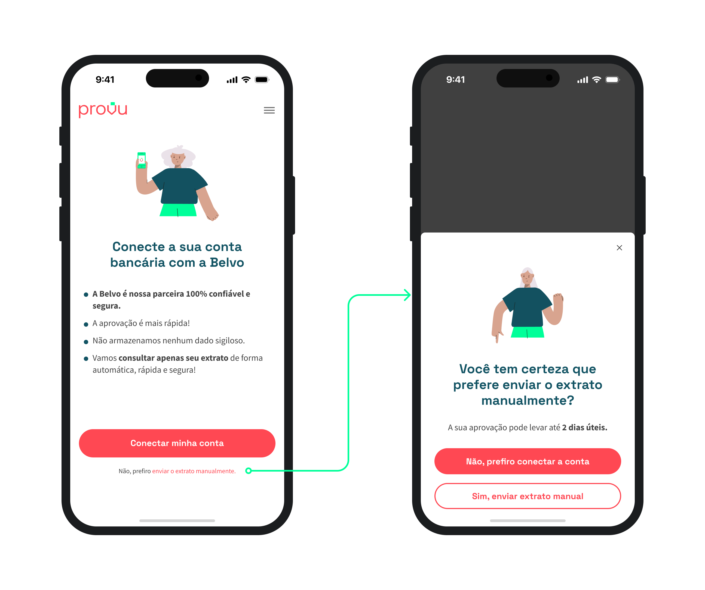

Contexto
Na Provu, a comprovação de renda era o ponto de maior fricção no funil de crédito. Havia dois caminhos disponíveis: a conexão automática via Belvo, parceiro que acessa o internet banking do usuário e envia apenas o extrato dos últimos 90 dias à mesa de crédito, ou o envio manual do extrato em PDF.
O problema era que a maioria escolhia o caminho errado, não por preferência real, mas por desconfiança. O custo era direto: mais revisão manual para a mesa de crédito, mais espera para quem pedia o empréstimo.
"56% dos usuários que escolhiam o envio manual disseram que o motivo era insegurança ao enviar dados bancários. 90,2% nunca tinham ouvido falar da Belvo."
Pesquisa quantitativa via Hotjar — 100 respostas em 7 dias
Desafios
📉
Baixa adesão ao fluxo automático. Apenas 48,5% dos usuários conectavam a conta via Belvo. Os outros 51,5% enviavam o extrato manualmente, gerando gargalo operacional na mesa de crédito.
🔒
Desconfiança como barreira invisível. A hipótese inicial era que o problema era técnico ou de usabilidade. A pesquisa mostrou que era de confiança: o usuário não conhecia a Belvo e não confiava no processo.
⚙️
Escalabilidade comprometida. O envio manual exigia revisão humana de cada documento. Com o crescimento das originações, a mesa de crédito não escalaria sem automação.
Processo
01
Análise de dados com o time de BI
Antes de qualquer hipótese, fui aos dados. O BI apontou que usuários que conectavam via Belvo concluíam o empréstimo em 23% dos casos, contra apenas 8% dos que enviavam o extrato manualmente. Além disso, 95% dos usuários tinham conta em bancos suportados pela Belvo. O potencial estava represado por algo que não era técnico.
02
Pesquisa quantitativa via Hotjar
Configuramos um questionário diretamente na tela de comprovação de renda, no exato momento em que o usuário optava pelo envio manual. Em uma semana, obtivemos 100 respostas: 56% apontaram insegurança como motivo principal, 90,2% não conheciam a Belvo e 71,8% tinham acesso ao internet banking. O obstáculo era percepção, não capacidade.
03
Definição da hipótese de design
Com os dados em mãos, a hipótese ficou clara: apresentar a Belvo com mais contexto e destaque para segurança devia ser suficiente para mover a agulha. A solução não era técnica. Era de comunicação.
04
Redesign da tela de comprovação de renda
Redesenhei a tela para tirar a falsa paridade entre as duas opções. A nova versão colocava a Belvo como padrão, com destaque para segurança e privacidade. O envio manual ficou como opção secundária: acessível, mas fora do foco visual. A funcionalidade não mudou. A hierarquia, sim.
05
Monitoramento pós-lançamento
Após o deploy, acompanhei os dados de conversão semanalmente via dashboard de BI, com foco na proporção entre conexões automáticas e envios manuais. A base de medição foram 4.601 usuários únicos que passaram pela tela no período pós-lançamento. A hipótese se confirmou na primeira semana.
Solução
A nova tela tirou a paridade visual. Em vez de apresentar Belvo e envio manual como escolhas equivalentes, a interface passou a ter hierarquia: Belvo na frente, com linguagem direta sobre segurança e privacidade. O envio manual continuou disponível, mas saiu do caminho principal.
Não desenvolvi nenhuma nova funcionalidade. O que mudou foi a mensagem: de "escolha como prefere" para "aqui está o caminho seguro, rápido e automático". A opção manual continuou disponível para quem precisasse. Mas deixou de competir em pé de igualdade com a melhor escolha.
A mudança de tela resolveu a hierarquia. Mas ainda havia um grupo que ignorava tudo e ia direto para o envio manual.
Para esse grupo, adicionamos um modal de confirmação. Quando o usuário tocava em "Não, prefiro enviar o extrato manualmente", aparecia uma pergunta simples: "Você tem certeza?" Com a informação de que a aprovação por esse caminho poderia levar até 2 dias úteis.
Não era um bloqueio. O usuário podia continuar com o envio manual se quisesse. Mas mostrar o custo real da escolha, no momento exato da decisão, dava uma segunda chance para quem estava hesitando por desconfiança, não por preferência.

Modal pós saída
Resultados
73%
De conexão bancária automática após o redesign
+24,5pp
De aumento na adesão ao fluxo via Belvo
4.601
Usuários únicos medidos no período pós-lançamento
1 tela
Alterada para gerar o resultado
Menos trabalho manual
Queda no volume de extratos enviados manualmente para revisão pela mesa de crédito.
Análise mais rápida
Com mais conexões automáticas, a análise de crédito passou a ser processada em minutos, não horas.
Base para automação futura
Com mais conexões via Belvo, ficou mais concreto automatizar completamente o processo de comprovação de renda em versões futuras.
Hipótese validada
A pesquisa do Hotjar provou que o obstáculo era percepção, não capacidade técnica. O resultado nos 4.601 usuários confirmou.
Aprendizados
O que esse projeto me ensinou.
Nem todo problema de conversão é de usabilidade. A tela original funcionava bem: o usuário entendia as opções e conseguia escolher. O problema estava no que ele sentia ao escolher. Desconfiança em algo que não conhecia.
Pesquisar antes de redesenhar mudou o escopo do problema. Sem os dados do Hotjar, a hipótese de trabalho seria usabilidade — e eu teria reescrito o fluxo inteiro para resolver algo que não era o problema real.